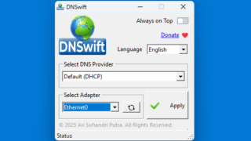

An application that allows you to easily change DNS server settings

A lightweight Windows application that lets you easily change the DNS server settings of your network adapter, quickly applying popular DNS providers such as Google DNS, Cloudflare, OpenDNS, and Quad9.
DNSwift Overview
DNSwift is a lightweight Windows application designed to simplify the process of changing DNS server settings.
DNSwift Features
These are the main features of DNSwift.
| function |
overview |
| Main Features |
Changing DNS server settings |
| Function details |
Easily and quickly change the DNS settings of your network adapter. |
You can easily change the DNS server settings.
DNSwift is a lightweight Windows application that allows you to easily change the DNS server settings for selected network adapters.
DNSwift allows you to quickly switch DNS servers of your choice between popular DNS providers, including Google DNS, Cloudflare, OpenDNS, and Quad9.
It's easy to use
In addition to allowing you to select from popular DNS providers, DNSwift also allows you to manually enter the IP addresses of custom DNS servers and change their settings.
Using DNSwift is easy; just select the DNS provider you want to use from the dropdown, select the network adapter you want to apply it to, and click a button.
You can quickly switch DNS servers
DNSwift is a handy application that lets you switch your Windows DNS server settings between popular providers, set up custom servers, and even revert to the default (DHCP) settings for peace of mind.
|